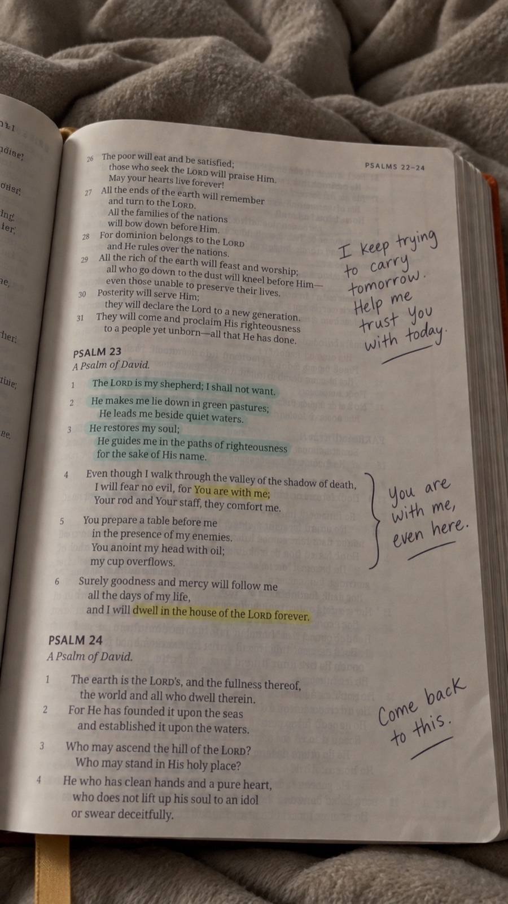

It rings, and names a verse.Any time you set it. It rings on Silent and in Focus too.
Open your Bible to it.Paper, an app or a website. Any translation.
Point your camera at the page.When Risen sees the verse, the alarm stops.
I can do all things through Christ who gives me strength.Philippians 4:13, Berean Standard Bible
Then it stays with you.
After the alarm stops, Risen opens a short prayer on the verse you found. There's no snooze, and nothing to scroll.

A short prayer.Written on the verse you found.

A note, if you want one.Pick how it felt, or write a line.

Every verse, kept.Your Book shows each verse you've read.

The whole chapter.Read around it in BSB, WEB or KJV.

Any alarm, any hour.Wake up, a nap, the gym. You choose.
Any Bible works.
Risen reads the page on your phone and checks it for the verse your alarm named.
- Printed BiblesAny edition, any translation.
- Apps and websitesPoint at the screen, or use a screenshot.
- No Bible nearbyAfter a while you can use a photo, or type the verse.
- On your phonePhotos stay on your phone. Turn on Smart reading and only the words it reads go online.

Make it yours.
Every look comes in light and dark. Try one: this page uses the same colors.
Premium unlocks every look, app icon and alarm sound.
Free to start.
Risen
Free
- One verse alarm
- A prayer with each verse, and your notes
- The whole Bible, in three translations
- Every verse you read, kept in your Book
- Today's verse on your Lock Screen
Risen Premium
Weekly, yearly or lifetime. Yearly starts with a free week.
- Unlimited verse alarms
- Both prayers and the devotionals
- Every page of your Book, and printing it
- Every widget, StandBy and the Live Activity
- All looks, app icons and sounds
Try it with your next alarm.
Questions
What if my Bible isn't with me?
After a little while, Risen offers a photo instead: a screenshot of the verse from a Bible app or website works. If that isn't possible either, you can type the verse. There's no snooze.
What does the alarm need?
Permission to set alarms, so it rings in silent mode and Focus. Notifications are optional; with them on, Risen keeps reminding you if you leave before finding the verse.
Does Risen upload my photos?
No. Risen reads the page on your phone. If you allow online help, it sends only the words it read, never the photo, when your phone can't match a page. A small picture of your page stays on your phone for your Book, and you can turn that off.
Which Bibles work?
Any printed Bible in any translation, a Bible app or a website. Risen shows the verse in the Berean Standard Bible, World English Bible or King James Version, all public domain.
How do I cancel or restore Premium?
Cancel a subscription in your iPhone's Settings, under your Apple Account. Restore Premium from the Premium page or Settings in Risen. Lifetime is a one-time purchase and never renews.
What happens if Premium ends?
Nothing is deleted. Your first alarm keeps its verse, other alarms still ring as plain alarms, and every verse you read stays in your Book.
Something else? Email satangscorgi@gmail.com